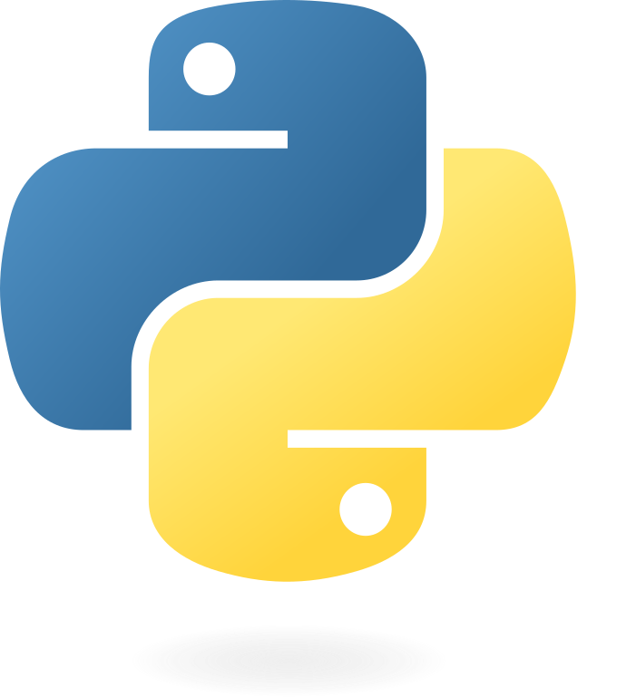

TATSUKI YAMAMOTO
PORTFOLIO
I conduct research in AI-driven drug discovery using bioinformatics,
with a particular focus on developing methods for drug target identification.
ABOUT
I am currently pursuing a Master’s degree in human health sciences at the Graduate School of Medicine, Kyoto University.
During my undergraduate studies, I specialized in medical laboratory science and gained a solid understanding of clinical data and how it is generated.
This perspective—knowing not only what the data show, but also how they are obtained—forms a critical foundation for working with medical data.
Building on this foundation, I worked on developing a machine learning framework to model the time-course dynamics of patients’ internal states in fatal cancer, with the goal of better understanding cancer pathophysiology and advancing precision medicine.
Through this journey, I became fascinated by the potential of data science at the intersection of biology and medicine, and I moved into bioinformatics as a cutting-edge approach to understanding disease mechanisms and accelerating drug discovery.
Today, I am developing AI and machine learning methods to identify and prioritize drug target candidates.
Looking ahead, I aim to apply data science across a broader range of challenges in drug discovery—helping deliver new medicines to patients faster and at greater scale.
MY VISION
Learn. Predict. Cure.
AI learns and predicts—and I keep learning to better anticipate what comes next.
By working alongside AI, I aim to help turn scientific insights into new treatments.
RECENT WORKS
RESEARCH ARTICLES
PRESENTATIONS
What Happens to Cancer Patients before They Die? Extracting the Dynamics of Mortality Factors using Machine Learning
Elucidation of Mortality Triggers Using Temporal Predictive Models
AWARDS
Excellent Poster Award, Chem-Bio Informatics (CBI) Society Annual Meeting 2023
WORK EXPERIENCES
Internship, Digital Transformation Unit (DXU), Chugai Pharmaceutical Co., Ltd.
SKILL

Python
Research experience using Python
Deep learning implementation with PyTorch / PyTorch Geometric
Bioinformatics
JSBi Certified Bioinformatics Engineer
Experience in scRNA-seq/snRNA-seq data analysis
Medical Technologist
Statistics
CONTACT
For inquiries, please contact me via SNS or email.
LinkedIn Email: yamamoto.tatsuki.25d[at]st.kyoto-u.ac.jp